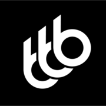
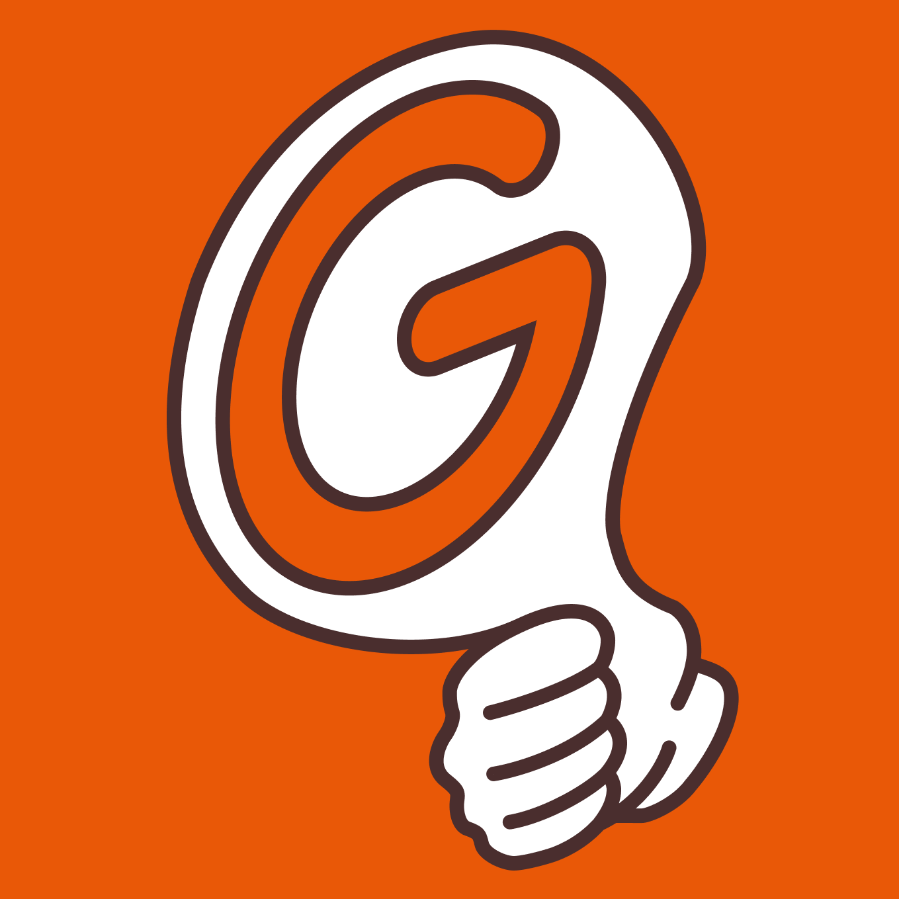
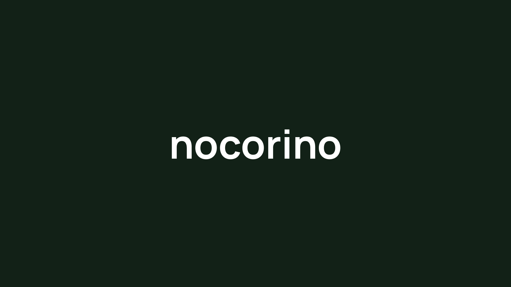

Service
picolis [ピコリス]
ブログを続けるのは大変だ、Twitterだと短くて伝えられない。リストの形式で表現しませんか？picolis（ピコリス）は、リストを読む、書く、シェアすることができる全く新しいテキストメディアプラットフォームです。https://picol.is

https://bebo6.app
bebo6 [ビーボシックス]
チャットでメモる、新発想のノートアプリ。備忘録の「録（ロク）」と6th Sense（第六感）を掛け合わせて生まれたメモアプリ。ひらめきから日常の記録まで気軽に管理できます。基本機能はすべて無料でご利用いただけます。https://bebo6.app

https://goodgen.xyz
Goodgen [グッゲン]
バイブコーディングプロダクト限定ショーケース。バイブコーディングによってみんながプロダクトを作り、みんなで投票し、みんなで盛り上げるWebサービスです。https://goodgen.xyz

https://nocorino.life
nocorino [ノコリーノ]
「大切にしたいこと」を可視化するウェブサービスです。やりたいこと、会いたい人、守りたい時間。それが、あと何回できるのかを計算し、残された回数を記録します。https://nocorino.life